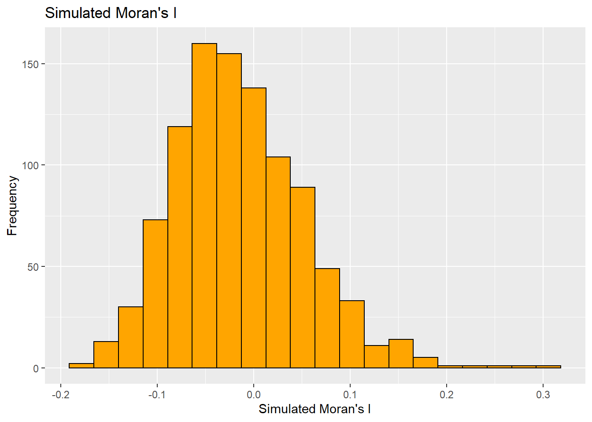

Global and Local Measures of Spatial Autocorrelation
Overview
In this section, we will learn about computation of Global and Local Measures of Spatial Autocorrelation using spdep packages. Analysis is performed for detecting clusters and outliers, hot spot or/and cold spot areas.
Getting Started
The analytical question
One of the main agenda for local government and planners is to ensure equal distribution of development in the province. Therefore, appropriate statistical methods will be applied to compute whether development are evenly distributed geographically or not. If the answer is NO, then next step will be to know “is there sign of spatial clustering?” or if the answer is YES, then next step will be to know “where are these clusters?”
In this section, spatial pattern of a selected development indicator (i.e. GDP per capita) of Hunan Provice, People Republic of China will be examined.
The Study Area Data and Analytical Tools
In this exercise, two data sets will be used, Hunan province administrative boundary layer at county level and Hunan_2012.csv.
Following R packages are installed before starting the analysis: spdep, sf, tmap and tidyverse.
Linking to GEOS 3.9.1, GDAL 3.4.3, PROJ 7.2.1; sf_use_s2() is TRUE
Loading required package: spdep
Loading required package: sp
Loading required package: spData
To access larger datasets in this package, install the spDataLarge
package with: `install.packages('spDataLarge',
repos='https://nowosad.github.io/drat/', type='source')`
Rows: 88 Columns: 29
── Column specification ────────────────────────────────────────────────────────
Delimiter: ","
chr (2): County, City
dbl (27): avg_wage, deposite, FAI, Gov_Rev, Gov_Exp, GDP, GDPPC, GIO, Loan, ...
ℹ Use `spec()` to retrieve the full column specification for this data.
ℹ Specify the column types or set `show_col_types = FALSE` to quiet this message.
Performing relational join
Updating the attribute table of hunan’s SpatialPolygonsDataFrame with the attribute fields of hunan2012 dataframe.
hunan <-left_join(hunan,hunan2012)
Joining, by = "County"
Visualizing Regional Development Indicator
Basemap and Cholorpleth maps are prepared to show the distribution of GDPPC 2012:
In this section , global spatial autocorrelation statistics is computed and spatial complete randomness test for global spatial autocorrelation is performed.
Computing Continuity Spatial Weights
Before computing Global spatial autocorrelation, Spatial weights of the study are constructed. Spatial weights are the neighbourhood relationships between the geographical units (i.e. county) in the study area.
Using poly2nb() of spdep package, Queen contiguity weight matrix is computed:
wm_q <-poly2nb(hunan, queen=TRUE)summary(wm_q)
Neighbour list object:
Number of regions: 88
Number of nonzero links: 448
Percentage nonzero weights: 5.785124
Average number of links: 5.090909
Link number distribution:
1 2 3 4 5 6 7 8 9 11
2 2 12 16 24 14 11 4 2 1
2 least connected regions:
30 65 with 1 link
1 most connected region:
85 with 11 links
The summary reports shows that in Hunan area there are 88 area units. The most number of neighbors are with 85th area unit and the least number of neighbors are with 30th and 65th area unit.
Row-standardized weights matrix
In th is section, each neighboring polygon will assigned with equal weights (style=“W”). It is done by assigning the fraction 1/(#ofneighbors) to each neighboring county then summing the weighted income values.
One of the drawback is that polygons along the edges of the study area will base their lagged values on fewer polygons thus potentially over- or under-estimating the true nature of the spatial autocorrelation in the data.
Characteristics of weights list object:
Neighbour list object:
Number of regions: 88
Number of nonzero links: 448
Percentage nonzero weights: 5.785124
Average number of links: 5.090909
Weights style: W
Weights constants summary:
n nn S0 S1 S2
W 88 7744 88 37.86334 365.9147
The input of nb2listw() must be an object of class nb. The syntax of the function has two major arguments, namely style and zero.poly.
style can take values “W”, “B”, “C”, “U”, “minmax” and “S”. B is the basic binary coding, W is row standardized (sums over all links to n), C is globally standardized (sums over all links to n), U is equal to C divided by the number of neighbours (sums over all links to unity), while S is the variance-stabilizing coding scheme proposed by Tiefelsdorf et al. 1999, p. 167-168 (sums over all links to n).
If zero policy is set to TRUE, weights vectors of zero length are inserted for regions without neighbor in the neighbours list. These will in turn generate lag values of zero, equivalent to the sum of products of the zero row t(rep(0, length=length(neighbours))) %*% x, for arbitrary numerical vector x of length length(neighbours). The spatially lagged value of x for the zero-neighbor region will then be zero, which may (or may not) be a sensible choice.
Global Spatial Autocorrelation: Moran’s I Test
In this section, Moran’s I statistics test will be performed using moran.test() of spdep.
Moran I test under randomisation
data: hunan$GDPPC
weights: rswm_q
Moran I statistic standard deviate = 4.7351, p-value = 1.095e-06
alternative hypothesis: greater
sample estimates:
Moran I statistic Expectation Variance
0.300749970 -0.011494253 0.004348351
As p value is very small, smaller than the significant level of 0.05% .Therefore, we will reject the null hypothesis.
Computing Morte Carlo Moran’s I
In this total of 1000 simulations will be performed by using moran.mc() of spdep
bperm_df <- bperm[7] #Extracting Only reserve data settrial <-as.data.frame(bperm_df) #Creating data frame ggplot(data=trial, mapping=aes(x=res))+geom_histogram(bins=20, color="Black", fill="orange")+labs(title="Simulated Moran's I", x="Simulated Moran's I",y="Frequency")

Global Spatial Autocorrelation: Geary’s
In this section, Geary’s c statistics testing will be performed using functions of spdep package
geary.test(hunan$GDPPC, listw=rswm_q)
Geary C test under randomisation
data: hunan$GDPPC
weights: rswm_q
Geary C statistic standard deviate = 3.6108, p-value = 0.0001526
alternative hypothesis: Expectation greater than statistic
sample estimates:
Geary C statistic Expectation Variance
0.6907223 1.0000000 0.0073364
As c values are less than 1, we can conclude values are dispersed and observations tend to be dissilimar. We reject the null hypothesis as p value is less than the significant value of 0.05%.
Computing Monte Carlo Geary’s C
Permutation test for Geary’s C Statistics is performed
Spatial correlogram are great to examine the patterns of spatial autocorrelation in the data or model residual.
They show how correlated are pairs of spatial observations when you increase the distance (lag) between them - they are plots of some index of autocorrelation (Moran’s I or Geary’s c) against distance.
Although these are not as fundamental as variograms but they provide richer information than variograms. Spatial Correlogram are useful as an exploratory and descriptive tool.
Compute Moran’s I Correlogram
Computation of 6-lag spatial correlogram of GDPPC. The global spatial autocorrelation used in Moran’s I. The plot() of base Graph is then used to plot the output.
We should examine full analysis report as plotting the output might now allow us to provide complete interpretation. This is because not all autocorrelation values are statistically significant.